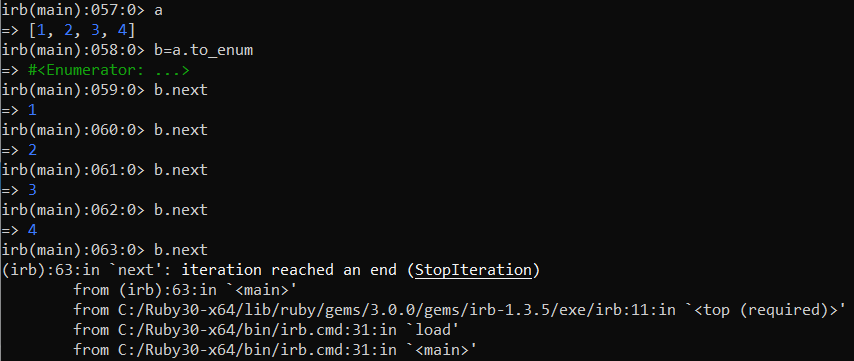

Enumerators
An enumerator is an object whose purpose is to enumerate another enumerable
object.
When we used each, map, select,reject,inject iterators we implicitly used enumerators
too!
Basically
an enumerator wraps the
iteration.
Enumerators are
useful in situations where
you do not want to use the original enumerable object, Iterators methods may modify it if planned like
that.
External IteratorsWhile each, map,select,reject are
internal iterators.
Enumerator objects allow you to control the iteration by calling an
external iterator.
To know more about Enumerators and how to create one:
•
https://ruby-doc.org/core-3.0.0/Enumerator.html•
https://rossta.net/blog/what-is-enumerator.html